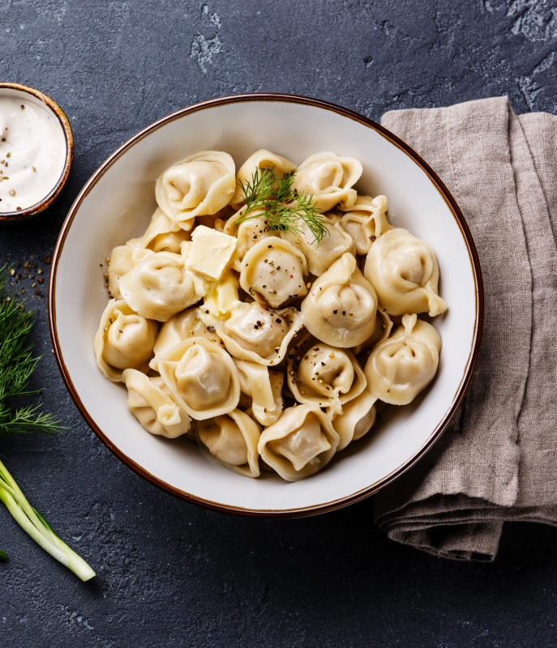

Пельмени классические
Рецепт:
- Мука пшеничная - 500 г
- Яйца куриные - 2 шт
- Вода
- Соль - 1/3 ч. л.
- Говядина - 370 г
- Свинина - 370 г
- Лук репчатый - 1 шт
- Соль - 10 г
- Перец черный свежемолотый
Приготовление
- Нарежьте мясо и лук кусочками. Прокрутите мясо через мясорубку вместе с луком. Посолите, поперчите, влейте небольшими порциями воду, после каждого добавления воды фарш тщательно вымешивайте. Вода должна впитаться в мясо – фарш не будет жидким.
- Накройте миску с фаршем пленкой и поставьте в холодильник минимум на 1 ч. Тем временем займитесь тестом. Просейте через сито муку горкой на рабочую поверхность. В центре сделайте небольшое углубление.
- Разбейте яйца в стакан или кружку, слегка перемешайте вилкой и долейте столько воды, чтобы общий объем жидкости составил 250 мл. Вылейте яйца с водой в углубление в мучной горке, добавьте соль и начните вилкой аккуратно замешивать тесто, понемногу подсыпая муку с боков.
- Когда вся жидкость будет замешана, начните вымешивать тесто руками, присыпая его немного мукой, пока оно не станет однородным и эластичным. На это может уйти около 15 мин. Скатайте тесто в шар, накройте миской, оставьте на 30 мин – так оно станет эластичнее.
- Раскатайте тесто на подпыленной мукой рабочей поверхности в тонкий пласт. Вырежьте при помощи стакана кружки диаметром 5 см. Положите на тесто начинку и защипните края пельменей. Отварите пельмени в большом количестве подсоленной кипящей воды, 5 мин после всплытия. Переложите пельмени шумовкой на дуршлаг, а затем – на блюдо. Добавьте сливочное масло и аккуратно перемешайте. Подавайте, присыпав черным перцем.